Загрязнители воздуха
НЕОРГАНИЧЕСКАЯ ХИМИЯ — раздел химии, связанный с изучением всех химических элементов и их неорганических соединений. Теоретическим фундаментом неорганической химии является периодический закон и основанная на нём периодическая система Д. И. Менделеева. Важнейшая задача неорганической химии состоит в разработке и научном обосновании способов создания новых материалов с нужными свойствами. Число известных на 2013 г. неорганических веществ приближается к 400 тысячам.
ОРГАНИЧЕСКАЯ ХИМИЯ — раздел химии, изучающий соединения углерода «С» (за исключением самых простых, типа СО2, Н2СО3). Способность углерода соединяться с большинством элементов и образовывать молекулы различного состава и строения обусловливает многообразие органических соединений, сейчас их число превысило более 60 млн. Таким образом, органические соединения — самый обширный класс химических соединений. На заре органической химии предметом изучения были преимущественно субстанции биологического происхождения (Органика и Минералы). Именно этому факту органическая химия обязана своим названием.
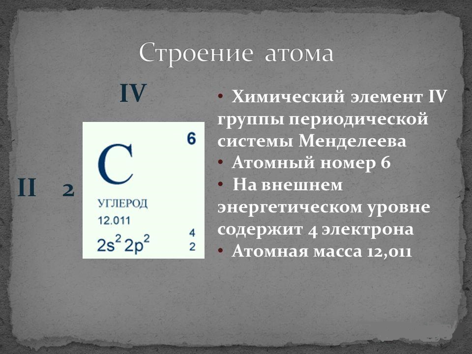Несмотря на великое разнообразие присутствующих в воздухе частиц органического происхождения, наибольшее влияние на здоровье человека оказывают содержащиеся в воздухе помещений биологические загрязнители.
Применительно к воздухоочистителям органическими принято считать именно биологические загрязнители
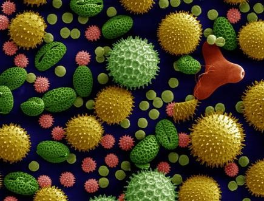Биологические органические загрязнения воздуха
Помимо микроорганизмов, к которым относятся вирусы, бактерии, грибы и простейшие одноклеточные, в воздухе помещений могут также содержаться пыльца, частицы шерсти и кожи животных, кожи человека, фрагменты насекомых и клещей, а также их выделения. Кроме взвеси вышеперечисленных частиц воздух помещений может содержать летучие органические соединения, являющиеся продуктами жизнедеятельности живых организмов: растений и микроорганизмов.
Химическими загрязнителями принято считать несвойственные атмосфере вещества химической природы газообразные и аэрозольные загрязнители промышленно бытового происхождения
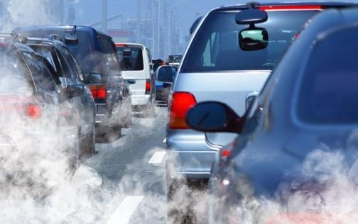Вредные газы попадают в воздух в результате сжигания топлива для нужд промышленности, отопления, работы транспорта, потребляющие более 70% ежегодно добываемого твердого и жидкого топлива.
Основными вредными примесями являются:
- Оксид углерода CO (угарный газ). В воздух он попадает в результате сжигания топлива, с выхлопными газами и выбросами промышленных предприятий. Ежегодно этого газа поступает в атмосферу не менее 1250 млн.т. Вступая в связь с гемоглобином, окись углерода образует соединение карбоксигемоглобин. Он препятствует нормальной доставке кислорода к органам и тканям, в результате чего, развивается хроническое кислородное голодание. В выхлопных газах содержится множество тяжелых металлов, которые имеют свойства оседать в организме, накапливаясь постепенно. Опасность состоит в том, что зашлакованность организма происходит незаметно для человека, и в будущем совершенно неожиданно может вылиться в серьёзное заболевание, в частности раковые опухоли дыхательной системы.
- Сернистый ангидрид SO2 (серни́стый газ). Выделяется в процессе сгорания серосодержащего топлива или переработки сернистых руд (до 170 млн.т. в год). Часть соединений серы выделяется при горении органических остатков в горнорудных отвалах. Только в США общее количество выброшенного в атмосферу сернистого ангидрида составило 65 % от общемирового выброса.
- Серный ангидрид SO3 (се́рный газ). Образуется при окислении сернистого ангидрида. Конечным продуктом реакции является аэрозоль или раствор серной кислоты в дождевой воде, который подкисляет почву, обостряет заболевания дыхательных путей человека. Выпадение аэрозоля серной кислоты из дымовых факелов химических предприятий отмечается при низкой облачности и высокой влажности воздуха. Металлургические предприятия цветной и черной металлургии, а также ТЭС ежегодно выбрасывают в атмосферу десятки миллионов тонн серного ангидрида.
- Сероводород H2S и сероуглерод CS2. Основными источниками выброса являются предприятия по изготовлению искусственного волокна, сахара, коксохимические, нефтеперерабатывающие, а также нефтепромыслы.
- Оксилы азота. Основными источниками выброса являются предприятия, производящие азотные удобрения, азотную кислоту и нитраты, анилиновые красители, нитросоединения, вискозный шелк, целлулоид. (20 млн.т. в год).
- Соединения фтора. Источниками загрязнения являются предприятия по производству алюминия, эмалей, стекла, керамики, стали, фосфорных удобрений. Соединения характеризуются токсическим эффектом. Производные фтора являются сильными инсектицидами.
- Соединения хлора. Поступают в атмосферу от химических предприятий, производящих соляную кислоту, хлоросодержащие пестициды, органические красители, гидролизный спирт, хлорную известь, соду. В металлургической промышленности происходит выброс в атмосферу различных тяжелых металлов и ядовитых газов. При переработке 1 тонны чугуна выделяется 12,7 кг сернистого газа и 14,5 кг пылевых частиц, определяющих количество соединений мышьяка, фосфора, сурьмы, свинца, паров ртути и редких металлов, смоляных веществ и цианистого водорода.
Аэрозольное загрязнение атмосферы. Аэрозоли - это твердые или жидкие частицы, находящиеся во взвешенном состоянии в воздухе. Средний размер аэрозольных частиц составляет 1-5 мкм. При сжигании каменного угля в атмосферу выбрасывается 93 млн. тонн пыли в год. При выплавке чугуна -20 млн. тонн в год, производстве цемента – 53 млн. тонн в год.
К основным атмосферным загрязнителям относятся углеводороды. Они подвергаются различным превращениям, окислению, полимеризации, взаимодействуя с другими атмосферными загрязнителями. В результате этих реакций образуются свободные радикалы, соединения с оксидами азота и серы.
Фотохимический туман (смог)
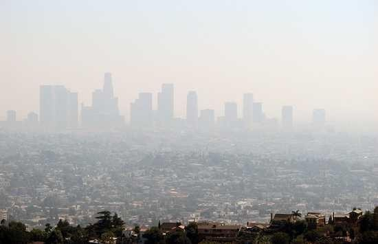Смог представляет собой многокомпонентную смесь газов и аэрозольных частиц. В состав основных компонентов смога входят озон, оксиды азота и серы, многочисленные органические соединения, дающие диоксиды, оксиданты и свободные радикалы. Фотохимический смог возникает при определенных условиях: наличии в атмосфере высокой концентрации оксидов азота, углеводородов и других загрязнителей, интенсивной солнечной радиации и безветрия или слабого обмена воздуха.
Смог крайне опасен для дыхательной и кровеносной системы и часто бывает причиной преждевременной смерти городских жителей. Максимальные концентрации характерны для городов с большой численностью населения. Если в городе размещены предприятия нескольких отраслей промышленности, то создается очень высокий уровень загрязнения воздуха.
По данным Москомприроды в районах жилых застроек вблизи автомагистрали уровень загрязнений по угарному газу и окислам азота превышает предельно допустимый (ПДК) в 10-15 раз. Это означает, что точно такую же концентрацию загрязнителей можно обнаружить и у себя дома. От уличных летучих загрязнителей нельзя укрыться ни за какими герметичными стеклопакетами - чистому воздуху просто неоткуда взяться. При этом концентрации веществ в помещении обычно выше чем на улице, т.к. из за отсутствия ветра, загрязнители «накапливаются» в помещении.
Возгорание лесов зачастую происходит по вине человека, а следствием возгорания лесополосы является возгорание торфяников, тех самых которые практически невозможно потушить традиционными способами.
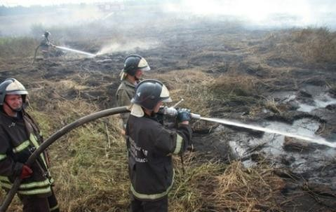Удушливый смог — на 90 процентов результат горения торфяников, а не лесов. Для того чтобы потушить 1 кубический сантиметр торфа, нужно 10 литров воды.
Вдыхаемый суточный объем дыма от горящих торфяников равен примерно 50-ти выкуренным сигаретам.
Вот наиболее часто встречающиеся источники загрязнения в помещении
- Биологические загрязнители, источниками которых являются насекомые, домашние животные и мы сами.
- Плесень, грибки и бактерии.
- Табачный дым, в состав которого входят: окись и двуокись углерода, аммиак, фенол, ацетон, цианистый водород и прочие токсичные соединения. В нем содержится порядка 5000 органических соединений, многие из которых канцерогенны и мутагены. Как доказали ученые вредные вещества от дымящейся сигареты можно обнаружить в помещении даже через месяц. Пассивные курильщики практически всегда беззащитны от воздействий табачного дыма. Если не вдаваться в подробности, то, что выдыхает активный курильщик становиться в 50 раз опаснее и это вдыхают окружающие курильщиков люди.
- Химические вещества, попавшие в помещение, в том числе оставшиеся на одежде после химчистки, углеводороды от автомобильных выхлопов, осевшие на одежде химические реагенты, используемые дорожными службами и др.
- Формальдегид, фенол, стирол выделяются из интерьеров и строительных материалов. Формальдегид внесен в список канцерогенных веществ, обладает токсичностью, негативно воздействует на генетический материал, репродуктивные органы, дыхательные пути, глаза, кожный покров. Оказывает сильное действие на центральную нервную систему.
- Всевозможные моющие и чистящие средства (бытовая химия)
- "Аммиачные дома" появились в связи с ошибками в строительстве. При постройке здания в зимнее время, для того чтобы не замерзал кладочный раствор, в него добавляют карбамид (мочевину). Это безвредное вещество по невыясненным причинам может начать разлагаться с образованием аммиака. В результате жилье приобретает характерный запах общественного туалета, а жильцы "аммиачного дома" перестают приглашать к себе в гости друзей, и начинают приглашать к себе в гости тех, кто этот дом построил.
- Источниками загрязнения также могут служить: мебель, ковры, всевозможные искусственные покрытия, лаки, краски, изоляция, фанера, бумага, стекловолокно, одежда и обивочная ткань.
Даже в небольших количествах эти загрязнители воздуха могут вызывать отравления у человека. К тому же летучие органические соединения довольно легко вступают в химические реакции с кислородом и другими окислителями, что приводит к образованию более серьезных токсичных загрязнителей.
Сделав анализ воздуха в городской квартире можно обнаружить порядка 40 000 летучих органических веществ, неважно, откуда они взялись: с улицы или образовались в самом помещении, важно то, что нам придется дышать воздухом с этими «добавками», а это не всегда полезно для здоровья.
Нарисовалась довольно мрачная картина жизни человека в современном городе все говорит об одном воздух которым мы дышим надо очищать.
Типы фильтров
Предварительный фильтр
Это самые простые фильтры, применяемые в воздухоочистителях. Предназначены они для удаления крупных пылевых частиц, шерсти животных, пуха и т.п. Такие фильтры устанавливаются практически на всем климатическом оборудовании и защищают от пыли не только людей, но и внутренние части самих приборов. Большинство фильтров предварительной очистки устраняют частички размером до 5 - 10 микрон.
(1 микрон = 0,001 миллиметра = 0, 000001 метра)
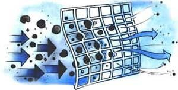Являясь предварительным, фильтр защищает последующие фильтрующие элементы (угольные, НЕРА — фильтры) от преждевременного износа.
Сегодня производители устанавливают в воздухоочистители предварительные фильтры с антисептической пропиткой, которая на протяжении большого промежутка времени предотвращает развитие плесени и грибков на поверхности фильтра.
Самыми распространенными веществами являются катехин и витамин С.
Являясь сильным антиоксидантами, витамин C и катехины уменьшают количество свободных радикалов в организме человека, в определённой мере предотвращая возникновение рака. А витамин C, помимо всего прочего, повышает сопротивляемость организма к инфекциям.
Эффективность предварительного фильтра
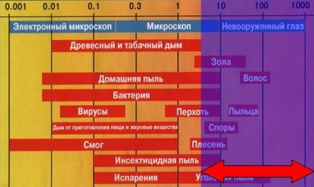HEPA – фильтр. High Efficiency Particulate Adsorption

High Efficiency Particutate Adsorption – Высокоэффективная Система Поглощения Частиц – представляет собой пылевой воздушный фильтр очень высокой эффективности. Изначально этот фильтр разрабатывался для систем вентиляции в медицинских учреждениях и помещениях с повышенными требованиями к чистоте воздуха. НЕРА - фильтр задерживает 99,97% вредных частиц размером от 0,3 мкм (HEPA13), в то время как большинство аллергенов: пыльца, споры грибов и плесени, перхоть домашних животных, пылевые клещи имеют размеры более 1 мкм.
Тип используемого материала и дизайн являются важными определяющими качества НЕРА фильтра. Гофрировка НЕРА фильтра должна быть сплошной для обеспечения одинаковой эффективности фильтрации. Если складки прилегают слишком плотно друг к другу, это ограничивает движение воздуха и приводит к снижению воздухопроницаемости. В некоторых НЕРА фильтрах вместо бумаги используются синтетические материалы. Однако тонкая бумага является наилучшим материалом, эффективно задерживающим большое количество микроскопических частичек и не сильно ограничивающим воздушный поток.
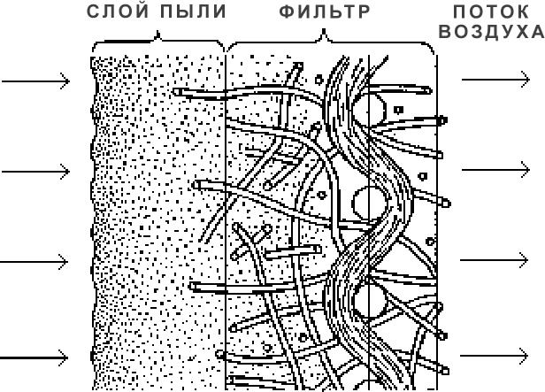Так как НЕРА фильтры высшего качества чрезвычайно хрупкие и их легко повредить, ведущие компании производители воздухоочистителей устанавливают фильтры таким образом, чтобы защитить материал НЕРА фильтров.
Кроме того, поверхность фильтров представляет очень удобный «плацдарм» для микроорганизмов, поэтому производители дополнительно пропитывают их специальным химическим составом с антибактериальными свойствами.
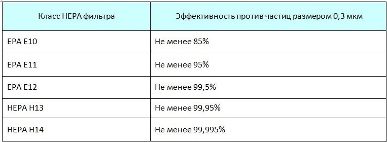
Класс HEPA фильтра
Эффективность против частиц размером 0,3 мкм
В соответствии с мировыми стандартами EN1822/DIN24183, а так же ГОСТ Р 51251-99.
Такие показатели достигаются за счет нескольких эффектов фильтрации, а именно:
Эффект сита – действует, когда расстояние между двумя волокнами меньше диаметра частиц.
Эффект инерции проявляется для всех частиц размером более 1 мкм. Благодаря большой инерции частица аэрозоля при приближении к препятствию, следует линии потока воздуха и не отклоняется вместе с воздухом, огибающим волокно, а
продолжает прямолинейное движение до непосредственного столкновения с препятствием.
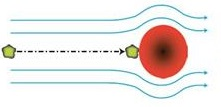Эффект зацепления проявляется, если линия потока воздуха проходит близко к фильтровальному волокну. Тогда любая частица размером 1 мкм и более зацепляется за препятствие внутри целого ряда волокон благодаря природным силам. Вероятность этого очень высока, поскольку воздушный поток проходит через огромное количество волокон.
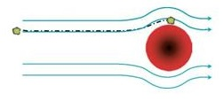Эффект диффузии имеет значение для частиц, приближающихся к молекулярным габаритам (размерами менее 0,1 мкм) с соответственно небольшой массой, которые совершают хаотическое инерционное движение в стороны от линий воздушного потока (броуновское движение).

Диффузионные частицы беспорядочно перемещаются на расстояния, превышающие их диаметр, и этот феномен виновен в их прикреплении к волокнам. Малые скорости воздушного потока увеличивают вероятность касания волокна частицей, поскольку она проводит больше времени вблизи него.
Это бесспорно для частиц небиологического происхождения. Механика взаимодействия биологических частиц с волокнистой структурой НЕРА фильтра имеет иную природу.
Способность бактерий и простейших микроорганизмов к целенаправленному движению генетически обусловлена наличием на их поверхности разного рода жгутиков и ворсинок. С помощью жгутиков и ворсинок бактерии передвигаются.
Подвижные бактерии сами могут освобождать себя от прикрепления к фильтрационным волокнам и вновь возвращаться в
воздушный поток и, таким образом, двигаться вдоль волокон в поисках влаги, сырости и питательных веществ.
Накопленные в фильтрах живые микроорганизмы способны расти в такой среде без добавления питательного вещества. Концентрация биологических частиц приводит к ускорению их размножения, “прорастанию сквозь” фильтр (напр. Escherichia coli) и усиленному выделению микробных токсинов.
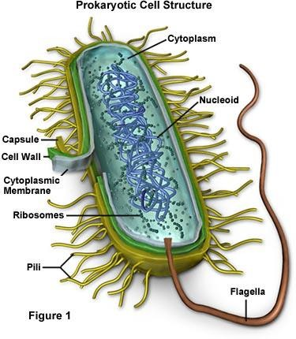При конденсации в фильтрах влаги или недостаточном уходе существует риск развития в них плесени. Размножение микрофлоры ведет к интенсивному забиванию пор фильтра и резкому снижению его фильтрующей способности. В этих случаях концентрация частиц биологического происхождения может быть на выходе фильтра больше, чем на входе. Выше представлено фото НЕРА фильтра, на котором в процессе эксплуатации осела и размножилась плесень, которая впоследствии с проходящим через фильтр потоком воздуха привносилась в операционное помещение одной из больниц США.
Для стерилизации (полное освобождение различных веществ, предметов, пищевых продуктов от живых микроорганизмов) в некоторых системах устанавливают УФ облучатели или обрабатывают специальным составом волокна фильтра.
Эффективность HEPA фильтра
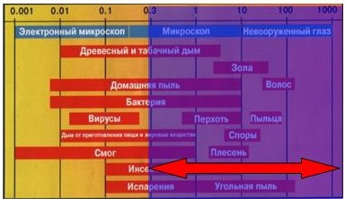Угольные фильтры
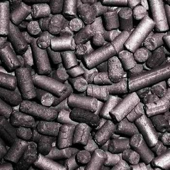Основным предназначением угольных и угольно- адсорбционных фильтров – является адсорбция неприятных запахов - ароматических углеводородов и других соединений органической и элементорганической природы с массой более 40 атомных единиц. Легкие соединения, такие как оксид углерода (СО) или окислы азота (NO), практически не адсорбируются на угольных фильтрах, однако для удаления ароматических углеводородов эти фильтры практически не заменимы.
Принцип действия фильтров на основе активированного угля.
Уголь с точки зрения химии – это одна из форм углерода с несовершенной структурой, практически не содержащая примесей.
Несовершенная форма характеризуется высокой степенью пористости с порами, размер которых колеблется в широком диапазоне – от видимых трещин и щелей до различных брешей и пустот на молекулярном уровне.
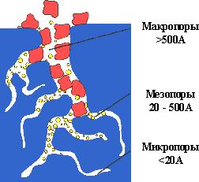Межмолекулярное притяжение, существующее в порах угля, приводит к возникновению адсорбционных сил, которые по своей природе сродни силе гравитации с той лишь разницей, что действуют они на молекулярном, а не на астрономическом уровне. Называются они: силы Ван-дер-Ваальса.
Структура пор активированного угля
В активированных углях различают три категории пор: микро-, мезо- и макропоры. Микро- и мезопоры составляют наибольшую часть поверхности активированных углей. Соответственно, именно они вносят наибольший вклад в их адсорбционные свойства. Микропоры особенно хорошо подходят для адсорбции молекул небольшого размера, а мезопоры - для адсорбции более крупных органических молекул. Определяющее влияние на структуру пор активированных углей оказывают исходные материалы для их получения. Активированные угли на основе скорлупы кокосов характеризуются большей долей микропор, а активированные угли на основе каменного угля - большей долей мезопор. Большая доля макропор характерна для активированных углей на основе древесины.
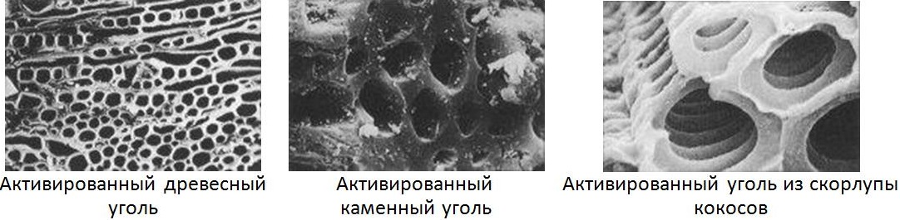Эффективность угольного фильтра
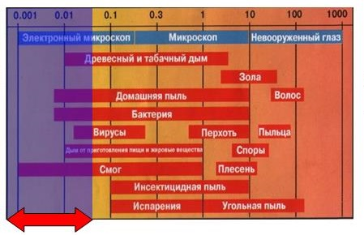Угольный фильтр является самым эффективным средство против аэрозолей (табачный дым, кухонная копоть и прочее).
Технологии фильтрации bork
Витаминный предварительный фильтр
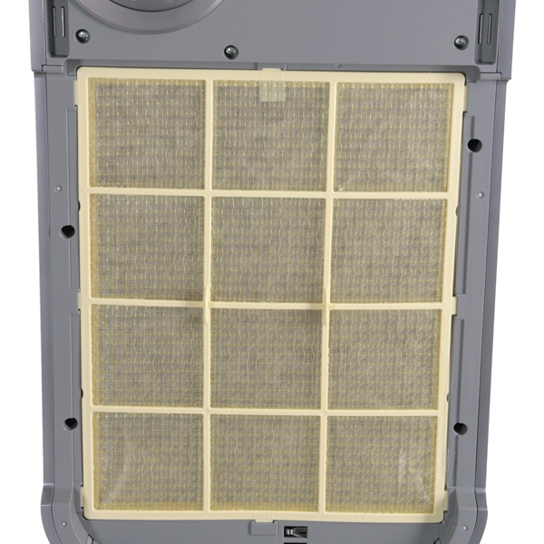Новое поколение предварительных фильтров BORK с витамином C.
Витамин С, являясь одним из лучших антиоксидантов, способен эффективно бороться с вредными радикалами (например озоном), большинство из которых крайне негативно влияют на человека, и могут приводить к легочным, онкологическим и другим заболеваниям.
Витамин С имеет сильные антибактериальные свойства, и способен уничтожать бактерии – возбудители дифтерии, тифа, туберкулеза, и других болезней.
При изготовлении фильтров, витамин С смешивается с материалом фильтра непосредственно во время производства, поскольку при нанесении витамина С на поверхность фильтра, существует высокая вероятность повреждения этого покрытия при чистке предварительного фильтра пылесосом или промывании в воде.
HEPA фильтр
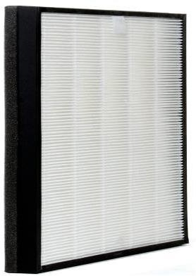Высокоэффективный фильтр тонкой очистки воздуха True HEPA Н13, представляет собой пылевой воздушный фильтр высокой эффективности.
Он задерживает 99,95% частиц размером от 0,06 мкм и больше, а также более 99,97% всех частиц размером от 0,3 мкм. HEPA фильтры BORK обработаны специальной антибактериальной пропиткой, препятствующей образованию грибков и бактерий как на поверхности фильтра, так и внутри него. Данная пропитка разработана специалистами компании Mitsubishi и является их ноу-хау. Технология пропитки целлюлозно-бумажных материалов известна давно и широко используется на высокотехнологичных производствах, однако из-за высокой стоимости большинство производителей HEPA фильтров ее не используют.
Угольный фильтр
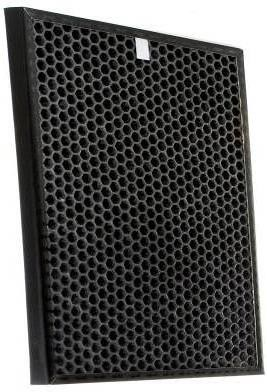Угольные фильтры BORK нового поколения из скорлупы кокоса имеют структуру сот, что позволяет обеспечить максимальную эффективность очистки воздуха на всей поверхности фильтра.
Особый вид угля способен удалять загрязнения из воздуха, газа и жидкостей. Когда различные загрязнения вступают в контакт с активированным углем, составляющие их молекулы задерживаются в крошечных капиллярных каналах на поверхности угля - этот процесс называется адсорбцией.
Гранулированный уголь имеет сравнительно большую площадь поверхности. Это делает фильтры нового поколения предпочтительными для ситуаций, когда главная цель - удаление летучих органических соединений.
Фильтр из нетканого материала
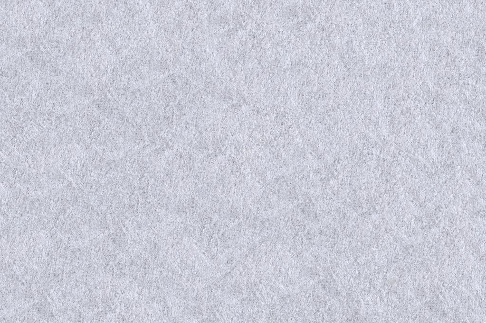Фильтр из нетканого материала, установленный перед специальным фильтром, удаляет пыль и волосы, защищая и продлевая срок службы специального фильтра. Этот фильтр на производстве крепится к специальному фильтру.
Основные свойства нетканого материала:
- сопротивление стиранию: нетканые полотна могут давать в пять раз большую износостойкость, чем прочие традиционные ткани;
- барьерные свойства: нетканое полотно способно отфильтровывать практически все частицы или аэрозоли или микроорганизмы, которые крупнее 2 микронов, их производят для отфильтровывания мелких частиц в воздухе или жидкости вплоть до наноразмерных частиц;
Система специальных фильтров
Компания BORK разработала систему специальных фильтров, которая максимально эффективно борется с наиболее вредными загрязнителями воздуха. Вы можете приобрести отдельно и установить любой из указанных ниже специальных фильтров.
Antivirus
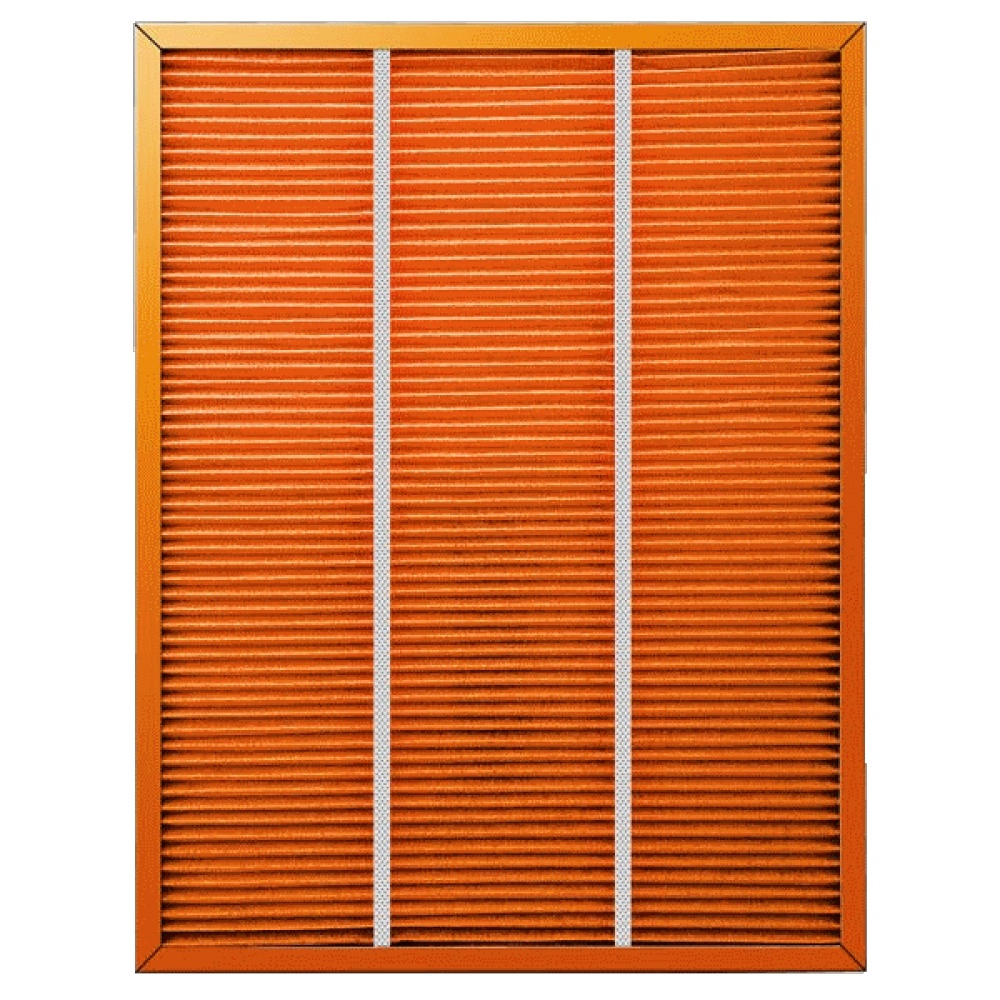Самым распространенным вирусным заболеванием является грипп. Ему особенно подвержены дети, пожилые люди и люди с ослабленным иммунитетом. В большинстве случаев заражение вирусом происходит воздушно-капельным путем. Новая разработка компании BORK – специальный фильтр ANTIVIRUS – снижает инвазивность самых распространенных штаммов вируса гриппа на 99,99%, тем самым, препятствуя дальнейшему распространению болезни. Основным элементом пропитки является экстракт Гинкго – реликтового растения.
Последние исследования показали, что на основе экстракта данного растения, возможно создать группу веществ (впоследствии получившее название IIDS influenza invasiveness decreasing substances), которые способны эффективно бороться с основными штаммами вируса гриппа, снижая его инвазивность. Кроме того, фильтр ANTIVIRUS способен бороться с самыми опасными штаммами вирусов птичьего гриппа H5N1 и H7N3. Фильтр протестирован и одобрен Tottori University и Tsukuba University, Япония.
Legioner
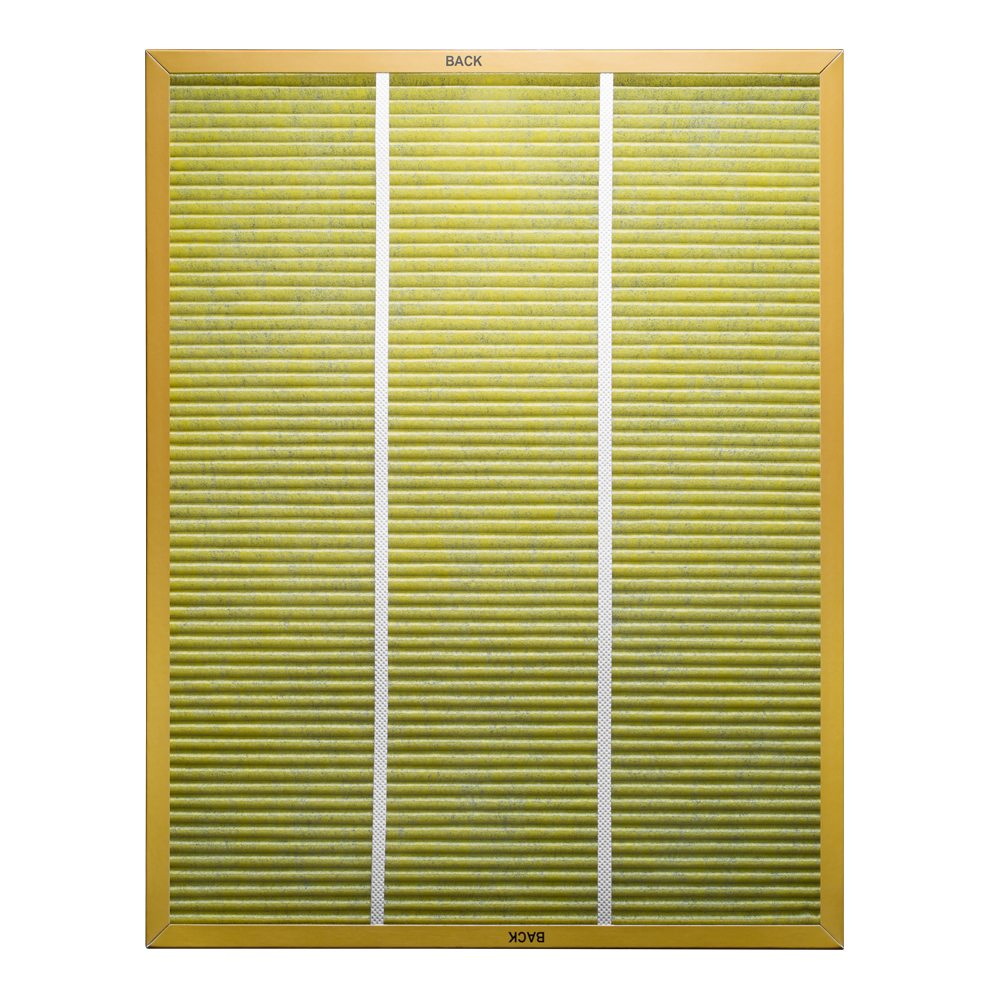Специальный фильтр LEGIONER был разработан компанией BORK для направленной борьбы с бактериями легионеллы, которые находятся в системах вентиляции и кондиционирования воздуха. Данный вид бактерий приводит к различным заболеваниям респираторной системы, самым распространенным проявлением которых является тяжелая форма пневмонии.
Специальный фильтр LEGIONER особенно необходим в летний период, когда во многих домах и офисах активно используются различные системы кондиционирования и вентиляции. Фильтр LEGIONER имеет особую запатентованную пропитку, содержащую Гуанидиновые
соединения, которая позволяет убивать бактерии легионеллы в воздухе, проходящем через фильтр. Данные соединения обладают широким спектром биоцидного действия и эффективны против большинства патогенных микроорганизмов, вызывающих гнойные, респираторные, кишечные и др. заболевания, включая туберкулез.
Противолегионеллезный эффект гуанидинов доказан исследованиями НИИЭМ им. Н.Ф. Гамалея (центр, сотрудничающий с Всемирной Организацией Здравоохранения) по контролю легионеллеза. Промышленные испытания биоцидных красок в НИИ Трансплантологии и искусственных органов, а также на Черкизовском молочном заводе показали, что их применение обеспечивает высокий уровень санитарно-гигиенической защиты в течение длительного времени. Полигуанидин – и препараты на его основе, экологически чистые дезинфекторы.
Platinum catalisis
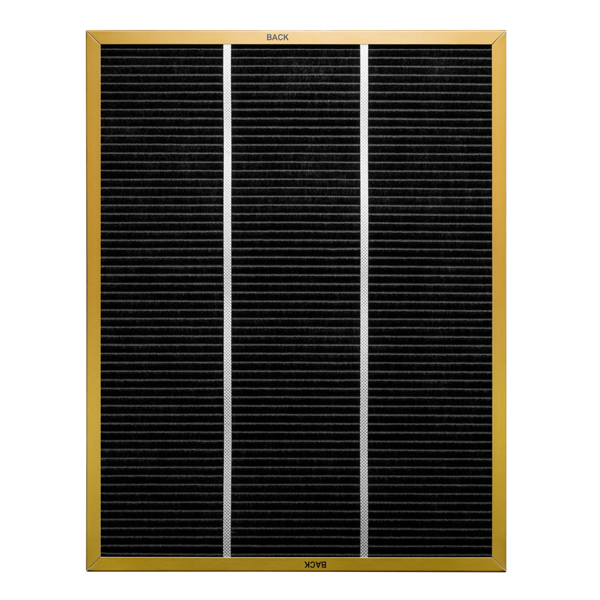Радость от переезда в новый дом или новую квартиру, ремонт или покупка новой мебели - всё отходит на второй план после резкого ухудшения самочувствия. Это связано с превышением нормы содержания в воздухе формальдегида, который выделяется из новых стен, потолков, мебели, различных искусственных покрытий, лаков и красок.
Формальдегид является чрезвычайно канцерогенным летучим органическим соединением, который, в зависимости от концентрации, может приводить к различному спектру недугов – от мигреней до онкологических заболеваний. Новый специальный фильтр PLATINUM CATALYSIS разработанный компанией BORK, позволяет снизить концентрацию формальдегида до уровня, неопасного для человека.
Фильтр Platinum Catalysis использует процесс платинового (холодного) катализа – химической реакции, результатом которой является нарушения структуры формальдегида и фенола. При этом в отличие от процесса фотокатализа не образуется озон, чрезвычайно вредный для человека.
Платина, особенно в мелкодисперсном состоянии, является очень активным катализатором многих химических реакций. В фильтре Platinum Catalysis используется пропитка на основе платинового порошка, которая не только создает условия, при которых стабильные молекулы формальдегида способны вступить в реакцию с молекулами кислорода, находящихся в воздухе, но и многократно ускоряет протекание химической реакции.
G&D (Gas and Dust filter)
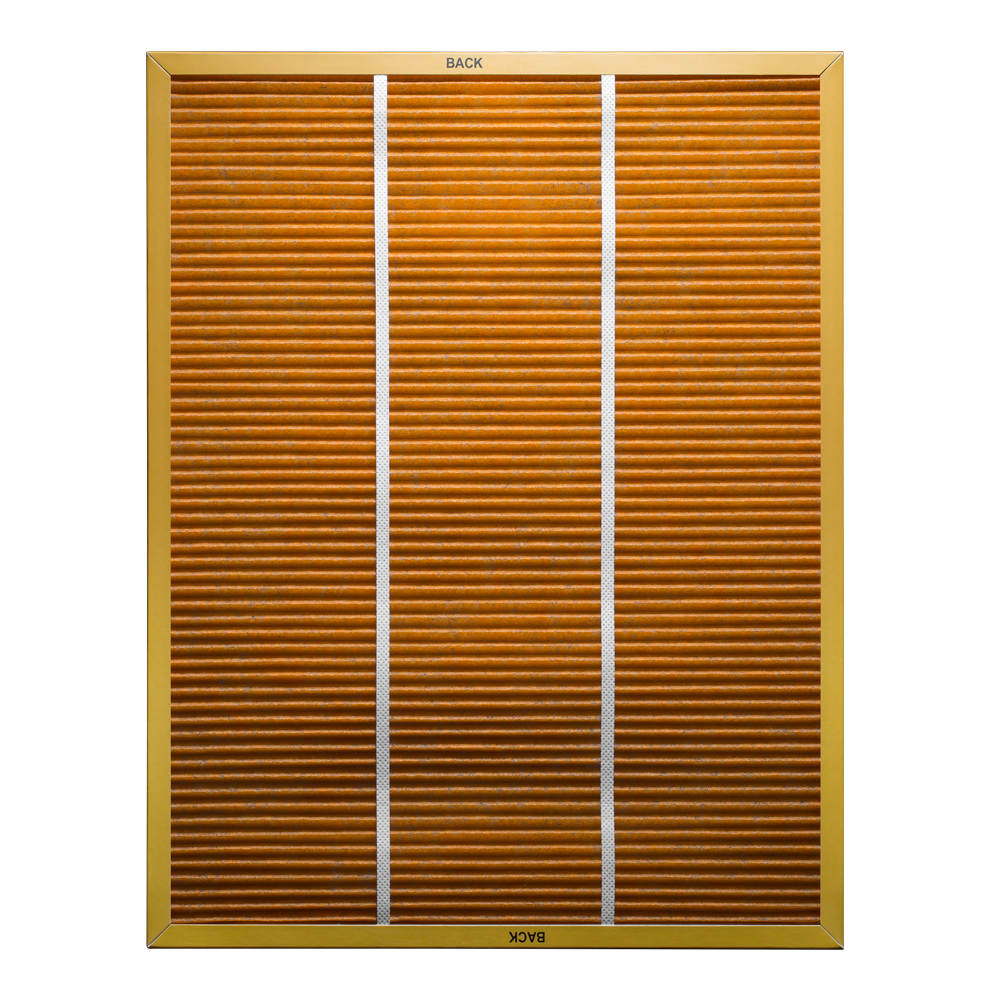Большинство систем фильтрации задерживает только пыль, высвобождая при этом сернистый газ, который притягивается пылью. Сернистый газ приводит к насморку, кашлю, головным болям, головокружению и тошноте. Новый специальный G&D фильтр, разработанный компанией BORK, не только очищает воздух от мельчайших частиц пыли, но и эффективно адсорбирует сернистый газ.
Фильтр G&D выполнен из высокотехнологичного материала Zeolite, который с помощью нано-пор эффективно поглощает вредные газы.
Данный материал был создан на основе цеолитов – минералов, способных селективно поглощать различные вещества.
В промышленности применяют исключительно искусственно синтезированные цеолиты, они находят широкое применение в водоочистительных приборах, как адсорбенты, ионообменники, молекулярные сита.
В результате из воздуха удаляется не только пыль, но и молекулы газа, которые притянуты положительным зарядом пыли.
Allergist
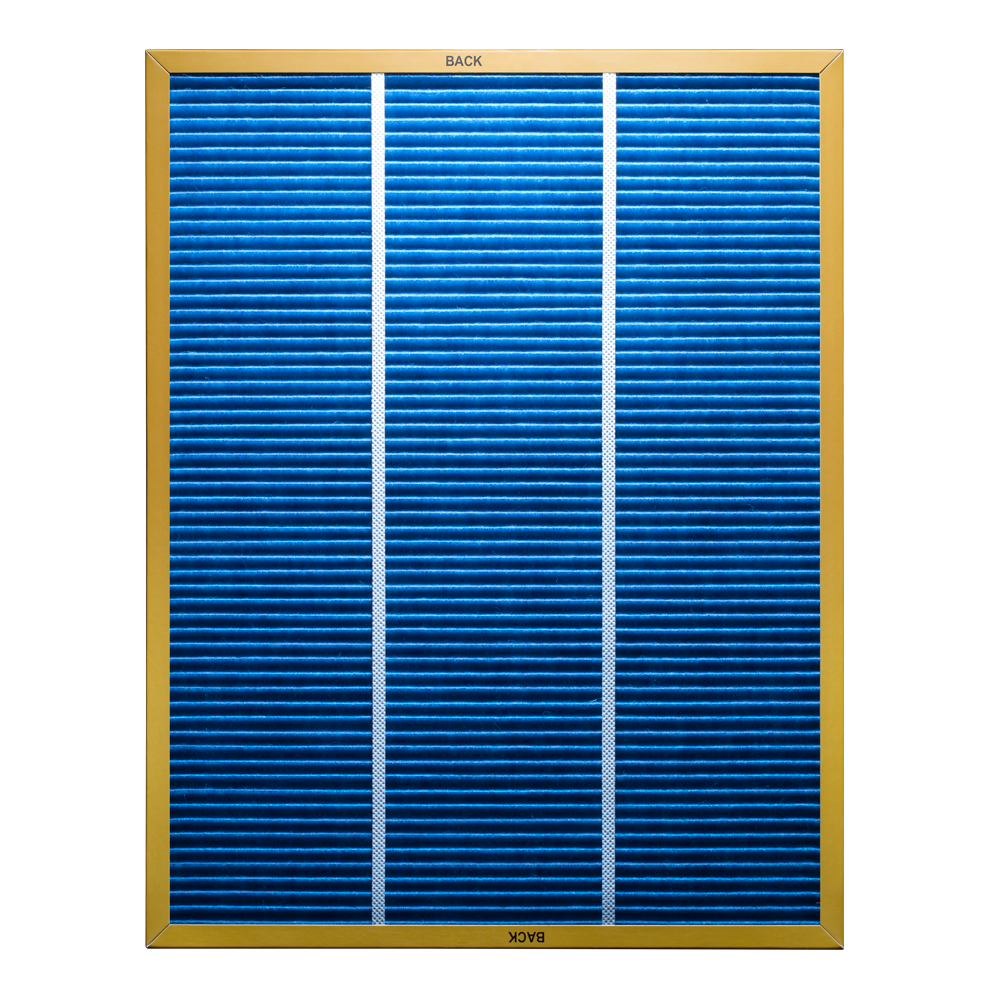Чума третьего тысячелетия – так часто называют ученые аллергию. Для того чтобы удалить более 99,99% аллергенов, большинство из которых не видны невооруженным глазом, компанией BORK был разработан новый специальный фильтр ALLERGIST, который быстро и эффективно очищает воздух от аллергенов.
Фильтр эффективно борется с пыльцой (более чем с 300 видами аллергенов растительного происхождения).
Multicare
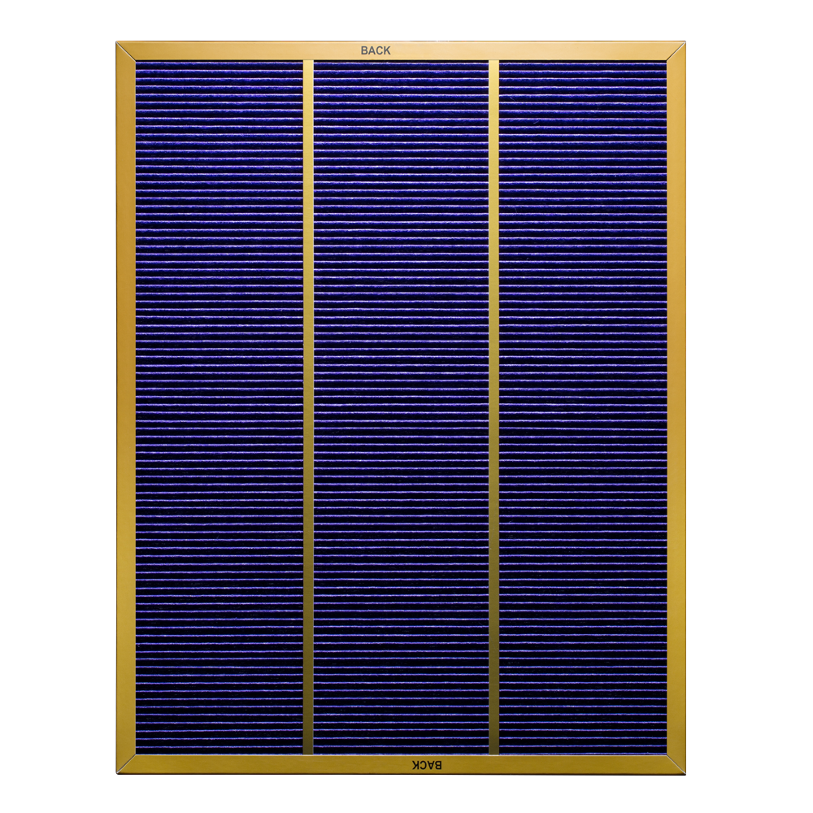Данный фильтр сочетает в себе свойства 3 специальных фильтров, а именно: G&D, ANTIVIRUS и LEGIONER. Поскольку каждый специальный фильтр имеет свою уникальную пропитку и у каждой из пропиток есть свои химические свойства, то не удалось объединить все пропитки в одном фильтре, т.к. при пропитке многие из них вступают в химическую реакцию и разрушают или изменяют структуру друг друга.
Green HEPA
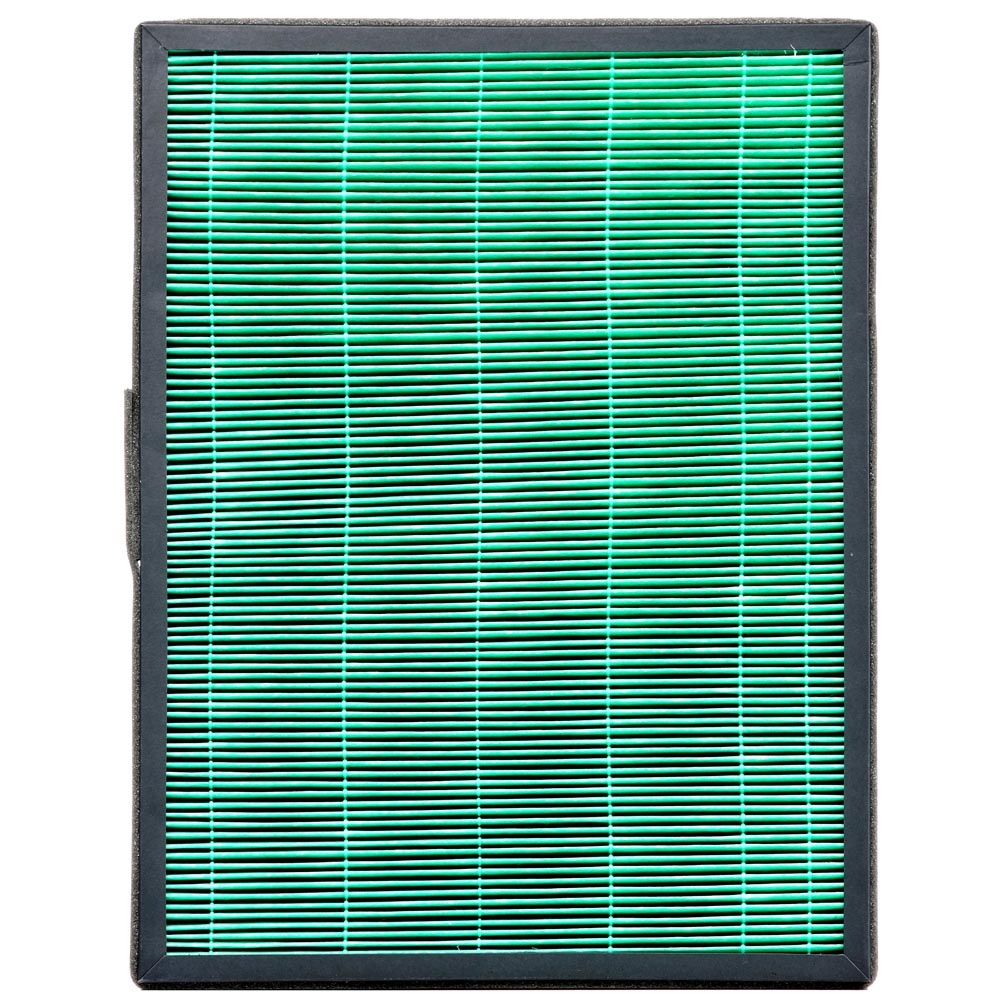Совмещает в себе свойства HEPA фильтра и специального фильтра Antivirus.
Подходит для всех воздухоочистителей BORK серии Aircraft (A500, A700, A701,А704, A800).
Green HEPA CARBON
Совмещает в себе свойства HEPA фильтра, специального фильтра Antivirus и угольного фильтра.
Подходит для всех воздухоочистителей BORK серии Aircraft(A500, A700, A701,А704, A800). (в модели А500 и А800 устанавливается только Green HEPA CARBON; в модели A700, A701можно установить дополнительно любой специальный фильтр).
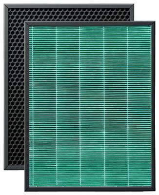ИННОВАЦИОННЫЙ НАТУРАЛЬНЫЙ СТЕРИЛЬНЫЙ МАТЕРИАЛ, УБИВАЮЩИЙ ДО 99.99% ВИРУСОВ (в том числе H1N1).
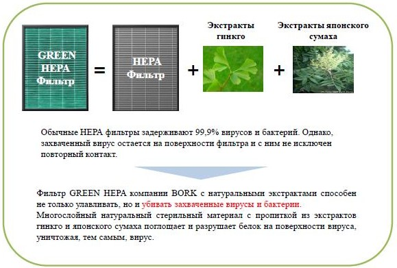